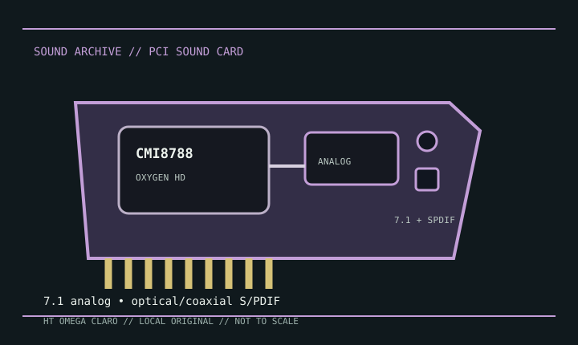

[ INDIVIDUAL MODEL // SOUND HARDWARE ]
HT OMEGA CLARO
This record covers the original HT OMEGA CLARO PCI model. The Claro Plus+, Halo, and later PCIe variants differ in component population and connectivity; use the board label and the correct manual to distinguish them.

Detailed specifications
| Exact model / scope | HT OMEGA CLARO, original conventional-PCI configuration. Excludes Claro Plus+, Claro Halo, and PCI Express family members. |
|---|---|
| Bus / host | Conventional PCI. Confirm that the host motherboard supplies a compatible legacy slot; the model is not PCIe. |
| Controller / audio path | C-Media CMI8788 Oxygen HD PCI audio processor. Analog performance depends on board-level converter and output circuitry; the component specification alone does not establish measured performance of an assembled card. |
| Connectors / channels | The original Claro is documented for multichannel analog playback with optical and coaxial S/PDIF. Exact analog jack, input, and front-panel header allocation follows the original Claro manual, not the Plus+ or Halo diagrams. |
| Formats / features | CMI8788 supports high-resolution multichannel PCM and software-dependent digital encoding/effects. Available rate, channel count, and encoded-output options depend on HT OMEGA driver/control-panel configuration. |
| Drivers / operating systems | HT OMEGA provides model manuals and legacy driver/support materials. The card targets Windows generations contemporary with its release; current OS support must be confirmed against the specific driver package. |
Compatibility & preservation
Compare the card’s printed model and port layout with the original Claro manual before loading software. Retain its driver installer, note the exact control-panel mode, and do not install Plus+/Halo software solely because the family name matches.
- Photograph the model marking, PCB revision, and all included brackets or cables before service.
- Save the matching driver, manual, and working host configuration; bus fit alone does not establish driver compatibility.
- Use the manufacturer’s model-specific pinout and routing diagram before connecting line, microphone, digital, or multichannel outputs.
Sources & documentation
- HT OMEGA — user manualsManufacturer manual repository; select the original Claro document rather than a family variant.
- C-Media CMI8788 datasheet mirrorController-level reference for the CMI8788; it does not substitute for the board-specific manual.